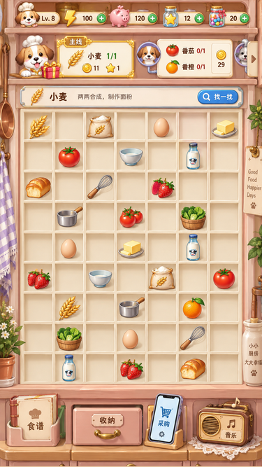
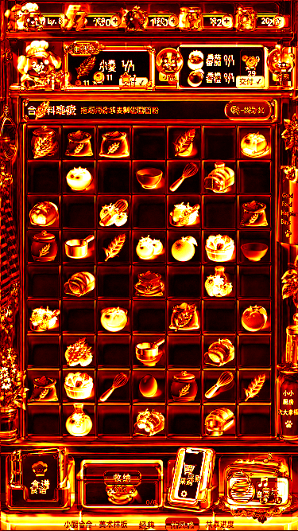
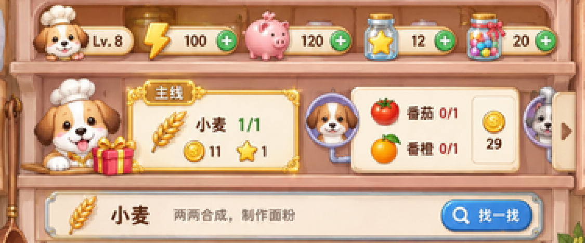
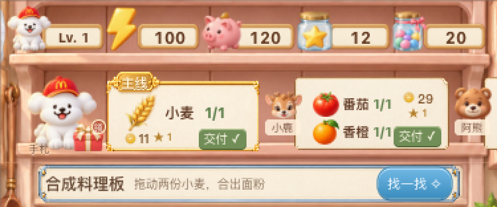
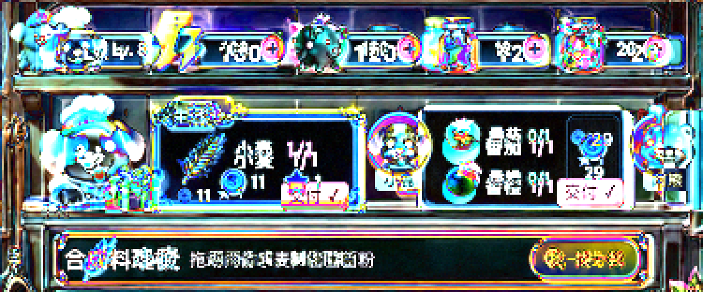
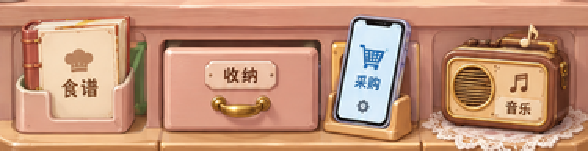
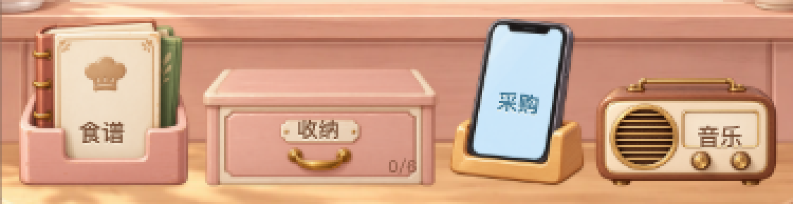
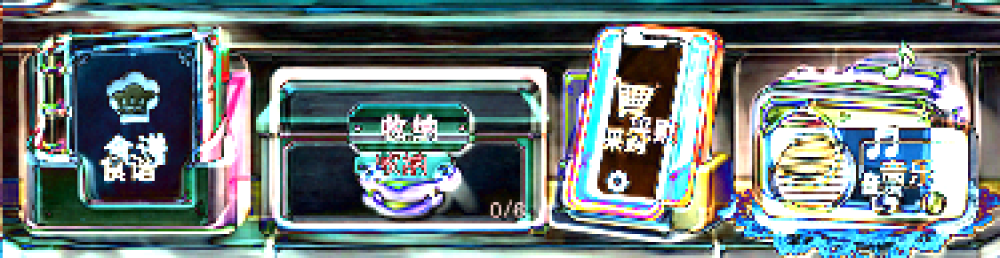

原稿 × 实际浏览器 · 逐像素对照
已修正格槽接缝：改为整块连续底板，共用细隔板，统一44px格距。查看原稿 / 修改前 / 现在的接缝放大对照 →
固定到 375×667，保留完整画面；不做局部配准、调色或遮罩排除。数值越低表示 RGB 差异越小，不能直接当作视觉还原度。
打开实际样板 ↗ · 素材图集 · 原始统计 JSON · 差异说明
全图平均绝对 RGB 误差 · 0–255加载中
当前任一通道差值 >32 的像素加载中
几何校正44×44 · 7×9棋盘由 336×432 调整至 308×396
仍有明显素材差异，未达到逐像素一致；白狗、物品样板和切换栏按约束保留，统计没有排除它们。
① 用户选定原始图稿
② 格槽修正后的实际浏览器样板 ③ 平均绝对 RGB 差分热图
③ 平均绝对 RGB 差分热图
0 · 黑43 · 红85 · 黄128+ · 白
可交互像素检查
同区域统计 · 校正前 / 后
| 区域 | MAE 校正前 | MAE 校正后 | RMSE 校正后 | 任一通道差值 >32 |
|---|
所有区块使用相同坐标。棋盘区域与“含侧边装饰”有重叠，不用于加总。MAE / RMSE 的通道取值范围为 0–255。
锚点偏移 · [x, y, 宽, 高]
原稿锚点为人工像素标注，约 ±2px，透明软阴影边界没有唯一位置。棋盘强制正方形带来的高度差单独保留。
查看 3 倍像素放大：订单与边框



查看 3 倍像素放大：底部物件



这是美术审阅样板。原 worktree 的未提交修改保持不动；本次没有提交、推送、合并或部署。